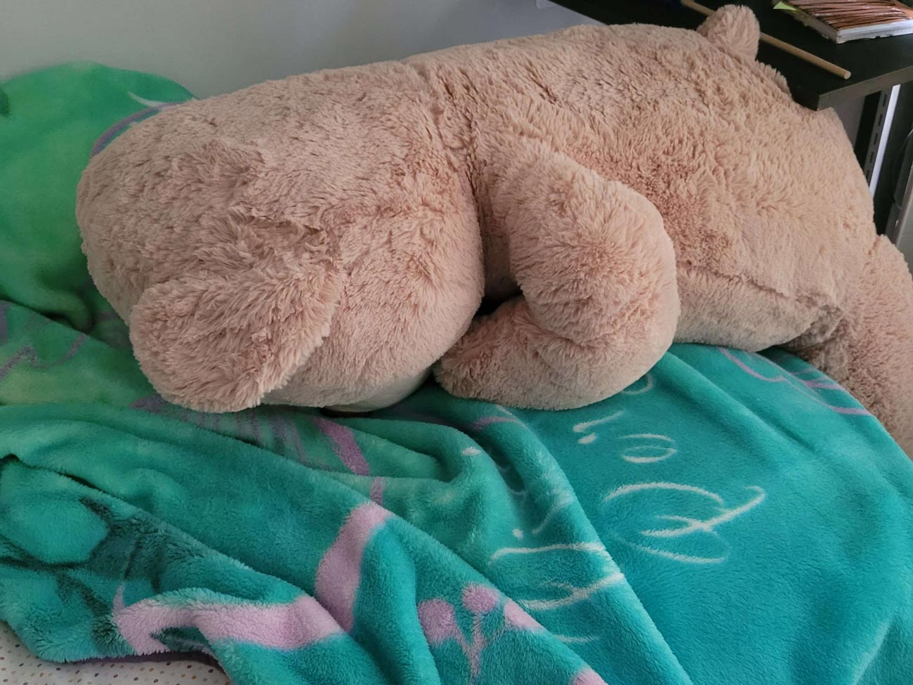

chronically online and terminally unserious
Hi. I'm Daryn.
I'm a User Experience and Interaction Design major at Drexel University, because I like to make things sometimes. (Which is why I'm also an artist...and ex-engineering student.)
I'm an avid liker of video (and non-video) games, video game soundtracks, and daydreaming about making video games. (I like other lots of other things too. I promise.)
I enjoy novelty and trying new things, and sometimes I have a lot of ideas about a lot of things. But I'm not very good at articulating them and I'm trying to fix that.
Also, I don't really have many pictures of myself.
crushing, i know
My main goals are sort of vague, because I like doing something new all the time, but I'd like to create meaningful things that other people can enjoy, even if they're just far-off visions for now.
I'm kind of reclusive, but out in the wild I'm an enthusiast for food, thrifting, plants, and taking pictures of anything but other people.
If you want to contact me for whatever reason, you can find me here. Probably.